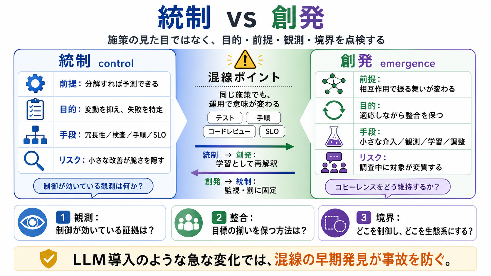

Control and complexity: tension in systems design
The adoption of LLMs in software development has led countless organizations to rapidly change their practices and struc…

システム設計で「分析的に分解できる前提（統制）」と「相互作用が振る舞いを変える前提（創発）」を混同しない。
LLM導入のような急な変化でこそ、ズレが事故に直結する。
どちらが「正しい」ではなく、同じ施策でも運用のしかたで期待通りに働いたり別の役割を担ったりする。
だから問いは「いま何を前提に設計し、現場で何が起きているか」になる。
統制は「部品を細かく理解すれば全体を予測できる」。創発は「分解しにくい相互作用で振る舞いが変わり、介入は小さく反復的に」。
目標は変動を抑え、失敗を特定して修正すること。
（日本語補足）統制志向＝予測を支える仕組みが「見える・追える」状態を作る。
介入は「一撃」ではなく小さな反復で調整する。制御者側も適応が必要になる。
理想は「静止」ではなく、動き続けることでバランスが保たれること。
テスト、手順、SLO、コードレビューなどは「施策」だけ見れば同じに見える。だが背後の目的・前提が違えば、成果も失敗の仕方も変わる。
「原因を特定して修正すれば良い」という統制モデルに対し、創発は観測と介入の影響で対象が変質しやすい。
これは「調べた時点の対象が、すでに別物かもしれない」失敗を説明する。
統制を強めるほど大事故が「低頻度・高インパクト」になり得る。成功/失敗の形が変わるため、単調に安全にはならない。
（日本語補足）統制の観測機構が本当に機能しているかが鍵。
技術導入の失敗は「機能追加」ではなく、制御モードの移行として現れる。予測性を削る側面と、適応性を増やす側面が相互に波及する。
LLM導入のような作り直しでは、二次的影響で全体の安定性が壊れ得る。
これで「混線」を早期に検出できる。
統制を目的に設計した仕組みが、現場では創発的に再解釈されることがある。逆に創発を意図した施策が統制のように機械的に運用され事務作業化することもある。
統制と創発を区別し、施策の見た目ではなく「目的・前提・観測・境界」を常に点検することが結論。
LLMなどの急な変化は、このズレを増幅する。だから「混線の早期発見」が価値になる。
The adoption of LLMs in software development has led countless organizations to rapidly change their practices and struc…
hardware, people, organizations, policies, and procedures. This perspective is directly relevant to LLM adoption in prof…
5. Prompt Chaining. Output of one LLM call becomes input of the next in a deterministic pipeline. Use when tasks decompo…
The third strategy (applicable for complex systems requiring cross-organizational integration) applies a three-layer ref…
Inapplicable for Decomposition: Seven participants shared that LLMs have not affected their problem decomposition, viewi…